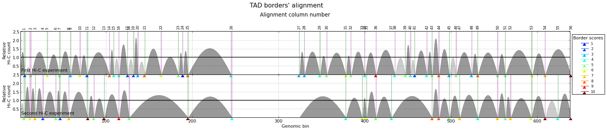

Alignment of TAD boundaries¶
Contents
TADbit allows to use the information from different Hi-C experiments and to put it together in order to decide whether some TAD boundaries are conserved or not.
Following with the example in the previous section (getting_start), we will load one extra experiment (from the same works of [Lieberman-Aiden2009]): .. code:: python
from pytadbit import Chromosome
# initiate a chromosome object that will store all Hi-C data and analysis my_chrom = Chromosome(name=’My fisrt chromosome’, centromere_search=True)
# load Hi-C data my_chrom.add_experiment(‘First Hi-C experiment’, hic_data=”../../scripts/sample_data/HIC_k562_chr19_chr19_100000_obs.txt”, resolution=100000) my_chrom.add_experiment(‘Second Hi-C experiment’, hic_data=”../../scripts/sample_data/HIC_gm06690_chr19_chr19_100000_obs.txt”, resolution=100000)
# Filter and normalize Hi-C matrices my_chrom.experiments[‘First Hi-C experiment’].filter_columns() my_chrom.experiments[‘Second Hi-C experiment’].filter_columns() my_chrom.experiments[‘First Hi-C experiment’].normalize_hic(iterations=30, max_dev=0.1) my_chrom.experiments[‘Second Hi-C experiment’].normalize_hic(iterations=30, max_dev=0.1)
# run core tadbit function to find TADs, on each experiment my_chrom.find_tad(‘First Hi-C experiment’, ncpus=4) my_chrom.find_tad(‘Second Hi-C experiment’, ncpus=4)
print my_chrom.experiments
/usr/local/lib/python2.7/dist-packages/pytadbit/parsers/hic_parser.py:98: UserWarning: WARNING: non integer values
warn('WARNING: non integer values')
/usr/local/lib/python2.7/dist-packages/pytadbit/utils/hic_filtering.py:148: ComplexWarning: Casting complex values to real discards the imaginary part
round(root, 3), ' '.join(
WARNING: removing columns having less than 46.314 counts:
245 246 247 248 249 250 251 252 253 254 255 256 257 258 259 260 261 262 263 264
265 266 267 268 269 270 271 272 273 274 275 276 277 278 279 280 281 282 283 284
285 286 287 288 289 290 291 292 293 294 295 296 297 298 299 300 301 302 303 304
305 306 307 308 309 310 311 312 313 314 315 316 317 318 319 320 321 322 323 324
639
WARNING: removing columns having less than 76.97 counts:
246 247 248 249 250 251 252 253 254 255 256 257 258 259 260 261 262 263 264 265
266 267 268 269 270 271 272 273 274 275 276 277 278 279 280 281 282 283 284 285
286 287 288 289 290 291 292 293 294 295 296 297 298 299 300 301 302 303 304 305
306 307 308 309 310 311 312 313 314 315 316 317 318 319 320 321 322 323 324 639
iterative correction
49.000 341.532 1342.000 0 2.92935
139.270 402.232 1851.850 1 3.60393
106.547 446.349 823.188 2 0.84427
291.427 478.358 1558.017 3 2.25701
170.153 505.116 692.435 4 0.66314
388.071 526.012 1311.444 5 1.49318
235.726 543.686 688.292 6 0.56643
442.199 557.807 1137.874 7 1.03991
295.885 569.706 689.294 8 0.48064
480.023 579.308 1020.535 9 0.76165
350.139 587.353 687.806 10 0.40387
508.486 593.878 930.721 11 0.56719
398.234 599.321 684.504 12 0.33552
531.296 603.750 862.416 13 0.42843
439.558 607.430 678.216 14 0.27637
549.819 610.433 810.355 15 0.32751
474.266 612.921 671.209 16 0.22622
564.630 614.955 770.461 17 0.25287
502.952 616.638 664.452 18 0.18437
576.402 618.015 739.694 19 0.19689
526.394 619.153 658.326 20 0.14982
585.751 620.086 715.815 21 0.15438
545.408 620.855 652.947 22 0.12152
593.187 621.487 697.170 23 0.12178
560.754 622.007 648.310 24 0.09848
iterative correction
145.000 980.181 2207.000 0 1.25163
608.654 1002.177 2710.006 1 1.70412
498.304 1010.461 1323.625 2 0.50685
865.363 1013.794 1629.838 3 0.60766
729.059 1015.556 1108.639 4 0.28211
966.332 1016.460 1272.554 5 0.25195
870.542 1016.979 1047.025 6 0.14399
994.846 1017.278 1131.194 7 0.11198
945.435 1017.459 1034.748 8 0.07079
[3.0, 6.0, 3.0, 4.0, 3.0, 5.0, 8.0, 3.0, 5.0, 3.0, 7.0, 9.0, 5.0, 5.0, 8.0, 7.0, 5.0, 7.0, 4.0, 8.0, 8.0, 7.0, 3.0, 4.0, 7.0, 8.0, 5.0, 4.0, 8.0, 7.0, 6.0, 4.0, 5.0, 7.0, 2.0, 2.0, 3.0, 3.0, 8.0, 3.0, 6.0, 6.0, 2.0, 9.0, 4.0, 3.0, 6.0, 4.0, 6.0, 4.0, 5.0, 3.0, 5.0, 7.0, 7.0, 4.0, 3.0, 4.0, 5.0, 5.0, 3.0]
[6.0, 4.0, 4.0, 3.0, 8.0, 4.0, 3.0, 3.0, 10.0, 3.0, 4.0, 4.0, 4.0, 6.0, 4.0, 3.0, 3.0, 4.0, 4.0, 4.0, 7.0, 3.0, 5.0, 2.0, 9.0, 4.0, 2.0, 3.0, 10.0, 8.0, 6.0, 6.0, 5.0, 2.0, 2.0, 2.0, 8.0, 5.0, 4.0, 5.0, 5.0, 5.0, 3.0, 2.0, 5.0, 2.0, 10.0, 7.0, 5.0, 3.0, 4.0, 5.0, 8.0, 1.0, 7.0, 3.0]
[Experiment First Hi-C experiment (resolution: 100Kb, TADs: 63, Hi-C rows: 639, normalized: visibility_factor:1), Experiment Second Hi-C experiment (resolution: 100Kb, TADs: 58, Hi-C rows: 639, normalized: visibility_factor:1)]
We now have loaded two Hi-C experiments, both at 100 Kb resolution, and have predicted the location of TADs in each of them (42 TADs detected in the first experiment and 31 in the second).
Aligning boundaries
——————-
To align TAD boundaries several algorithms have been implemented
(see pytadbit.chromosome.Chromosome.align_experiments()); our recommendation, however, is to use
the default “reciprocal” method (pytadbit.boundary_aligner.reciprocally.reciprocal()).
Note: If the align_experiments function is run with no argument, by default all the loaded experiments will be aligned.
Continuing with the example, the two loaded experiments are aligned as follow:
my_chrom.align_experiments(names=["First Hi-C experiment", "Second Hi-C experiment"])
print my_chrom.alignment
{('First Hi-C experiment', 'Second Hi-C experiment'): Alignment of boundaries (length: 95, number of experiments: 2)}
All the alignments done between the experiments belonging to the same chromosome are stored under the
alignment dictionary attached to the Chromosome object. Each alignment is an object itself
(see pytadbit.alignment.Alignment)
Check alignment consistency through randomization¶
In order to check that the alignment makes sense and that it does not correspond to a random association of boundaries, the “randomize” parameter can be set to True when aligning: .. code:: python
- score, pval = my_chrom.align_experiments(randomize=True, rnd_method=”interpolate”,
- rnd_num=100)
print ‘score:’, score print ‘p-value:’, pval
score: 0.2 p-value: 0.0
Visualization¶
The first function to call to check the quality of the generated alignments is the
pytadbit.alignment.Alignment.write_alignment():
.. code:: python
ali = my_chrom.alignment[(‘First Hi-C experiment’, ‘Second Hi-C experiment’)]
print ali
Alignment shown in 100 Kb (2 experiments) (scores: 0 1 2 3 4 5 6 7 8 9 10) First Hi-C experiment:| 8| ---- | 24| ---- | 33| ---- | 44| ---- | 50| ---- | 58| 64| ---- | 76| 82| 90| ---- | ---- | 102| ---- | ---- | 114| ---- | 126| 132| 137| ---- | 143| ---- | 156| ---- | 168| ---- | ---- | ---- | 192| 197| 204| ---- | 226| 233| 238| ---- | 246| 325| 330| 349| 356| 364| 378| ---- | 383| 388| 403| 409| ---- | 418| ---- | 427| ---- | 437| ---- | 444| 454| ---- | 459| 465| 471| 477| 487| ---- | ---- | 500| 505| ---- | 511| 516| 525| ---- | 530| 538| 548| 556| 562| ---- | 576| 587| 592| 600| 606| ---- | 622| ---- | 633| 639 Second Hi-C experiment:| 7| 19| 25| 30| ---- | 40| ---- | 48| ---- | 53| 58| ---- | 72| ---- | 82| ---- | 92| 98| ---- | 105| 111| ---- | 123| ---- | ---- | ---- | 139| 144| 150| ---- | 163| 168| 174| 179| 188| 193| ---- | ---- | 210| 227| 234| 239| 244| 246| ---- | ---- | ---- | ---- | ---- | ---- | 380| ---- | ---- | 404| 410| 415| ---- | 420| 426| 431| ---- | 440| ---- | ---- | 456| ---- | 465| 471| 477| 486| 493| 498| ---- | ---- | 509| ---- | ---- | ---- | 528| ---- | 537| ---- | 556| ---- | 568| 576| 588| 593| 600| ---- | 615| ---- | 624| 633| 639
The different colors, corresponding to the TADbit confidence in detecting the boundaries, show how conserved the boundaries are between (in this case) cell types.
Alignment can also be viewed using matplotlib (already mention in TADs in density plots): .. code:: python
ali.draw()
Note that this function can also be zoomed in.
ali.draw(focus=(1, 250))

xpr = my_chrom.experiments[0]
my_chrom.tad_density_plot(0, focus=(1, 300))
The get_column function¶
The pytadbit.alignment.Alignment.get_column() function allows to select specific columns of an alignment.
To select, for example, the third column of an alignment:
ali.get_column(3)
[(2, [>2300<, >2400<])]
The first element of the tuple is the column index, while the two values of the second element of the tuple
are the TADs associated to the aligned boundaries in that column. Note that TAD objects are represented
between the ‘>’ and ‘<’ symbols (see: pytadbit.alignment.TAD).
The pytadbit.alignment.Alignment.get_column() function can also take as an argument a function, in
order to select a column (or several) depending on a specific condition. For example, to select all the
boundaries with a score higher than 7:
cond1 = lambda x: x['score'] > 7
and to the get the selected columns: .. code:: python
ali.get_column(cond1=cond1)
[(94, [>63800<, >63800<])]
resulting, in the selection of these 3 columns.To add a second condition, e.g. to select only the columns after the 50th column of the alignment: .. code:: python
cond2 = lambda x: x[‘pos’] > 50 ali.get_column(cond1=cond1, cond2=cond2)
[(94, [>63800<, >63800<])]
Finally, to be more flexible, this conditions can be applied to only a given number of experiments (in this example of a pairwise alignment, it does not make a lot of sense): .. code:: python
ali.get_column(cond1=cond1, cond2=cond2, min_num=1)
[(61, [>-<, >43900<]), (63, [>45300<, >-<]), (69, [>48600<, >48500<]), (80, [>53700<, >53600<]), (88, [>59900<, >59900<]), (94, [>63800<, >63800<])]